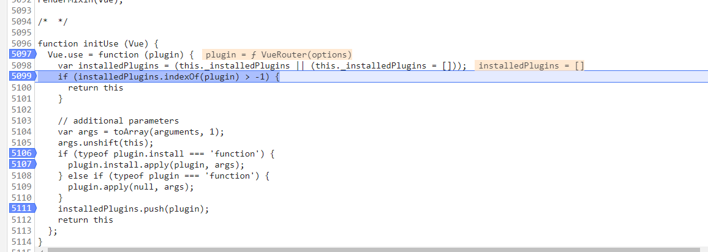

vue自定义组件的全局注册
在VUE开发过程中，我们会发现引入的第三方插件或依赖，有些引入后可以直接使用，有些需要调用Vue.use()来进行使用,这里面有什么区别呢？
我们先看下Vue.use()的官方说明：
安装 Vue.js 插件。如果插件是一个对象，必须提供 install 方法。如果插件是一个函数，它会被作为 install 方法。install 方法调用时，会将 Vue 作为参数传入。
该方法需要在调用 new Vue() 之前被调用。
当 install 方法被同一个插件多次调用，插件将只会被安装一次。
通过官方说明结合源码中Vue.use()方法的代码我们可以发现，每次调用都会对安装的插件进行判重操作，避免多次调用；且会检测传入的plugin类型是否为包含install方法的对象或者是一个函数；且当install方法调用时，会将Vue作为参数传入

接下来我们就自定义一个插件并进行注册：
首先创建一个名为dataUtils.js的文件，代码如下：
1 | export default { |
该文件导出了一个对象，且对象包含一个install方法。在该方面内添加了一个实例方法$uuid用于随机生成一个uuid。
然后在main.js文件内引入该插件,进行全局注册
1 | import Vue from "vue"; |
最终我们就可以在任意组件的方法内调用该插件提供的方法：
1 | this.$uuid() |
这样就实现了一个自定义组件的全局注册